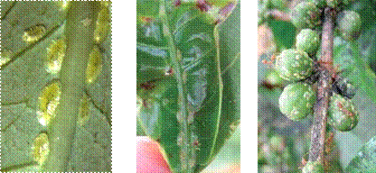
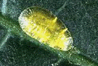

| Home |
| PEST OF COFFEE |
mAJOR PESTES |
| 1. White stem borer |
| 2. Red borer |
| 3. Shot hole borer |
| 4. Berry borer |
| 5. Green scale |
mINOR PESTES |
| 1. Mealy bug |
| Questions |
| Download Notes |
COFFEE :: MAJOR :: GREEN SCALE
5. Green scale: Coccus viridis (Coccidae: Hemiptera)
Distribution and status: India, Sri Lanka, Bangaladesh, Myanmar, Thailand and Malaysia. Widespread serious pest in tropics.
Host range: Citrus, mango, loquat, guava, sapota and a number of weeds.
Damage symptoms
They congregate on the undersurface of leaves close to the midrib and veins, on the green shoots, spikes, berries etc., and suck sap. Severe infestation results in death of the plant. The infested leaves may curl up and tender twigs droop. Honeydew excreted by the scale forms a layer on the leaves and acts as a medium for the growth of the “sooty mould”. Green scale is attended by various species of honeydew seeking ants. Certain ants especially the red ant and the cocktailed ant drive away the natural enemies. Removal of honeydew by ants further enhances survival of nymphs.
|  |
Bionomics
Adult scale is flat, oval, light green with an irregular, distinct intestinal loop of blackish spots visible through the dorsum. It is sedentary and leads its whole life usually in one place. Reproduction is by parthenogenesis. Female produces up to 600 progenies. Nymphs develop when the eggs are inside the body, and hatch out at the time or immediately after extrusion. Nymphs are pale yellow. There are three nymphal instars with a total duration of 4 to 6 weeks. Nymphs are disseminated on their own, or through wind. Green scale is a summer pest, proliferating during hot dry weather.
Management
- Spray white halo fungus Verticillum lecanii fungus @ 6x106 spores/ml.
- Release Australian ladybird beetle Cryptolaemus montrouzieri @ 750/ha
- Spray quinalphos 1.0 L in 500 L water/ha